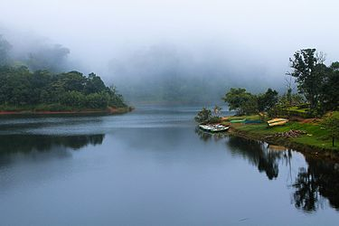

Gavi
Gavi is 14 km south west of Vandiperiyar, 28 km from Kumily, near Thekkady. Gavi is inside the Ranni reserve forest. Gavi is a part of Seethathode Panchayath in Ranni Taluk. Gavi is part of the Periyar Tiger Reserve, and the route can be covered by car from Vandiperiyar. Gavi is well known as an ecotourism destination.[4] The entrance fee is 25 rupees per person and 50 rupees per vehicle. Cameras are 25 rupees and video cameras are charged 100 rupees. Both day and night stays are available. Forest tent camping is available from November through March.[citation needed]. It has been said that most enjoyable route to Gavi is the way from Pathanamthitta.
Perunthenaruvi Waterfalls

Perunthenaruvi Waterfalls Pathanamthitta A popular place in Kerala to relax, and rejuvenate, Perunthenaruvi waterfall by the bank of the Pamba River against the backdrop of the Western ghats is a treat to eyes. The waterfall got its name from the two Malayalam words - Perunthu (great honey) and aruvi (stream). Perunthenaruvi Waterfalls drops down from an elevation of 100 meters and the best time to see it in its full glory has to be the monsoon. Another prompt feature of this unique sightseeing place is its location, which is right on the border of Kudamurutti and Vechoochira. Perunthenaruvi Waterfalls is located in Pathanamthitta District, which is hardly 128 kilometers from Thiruvananthapuram. To reach this popular tourist attraction, one can hop in a cab or Kerala tourism buses, which are easily available from nearby cities. Route to this waterfall starts from Ranni - Athikkayam - Kudamurutti - Perunthenaruvi.